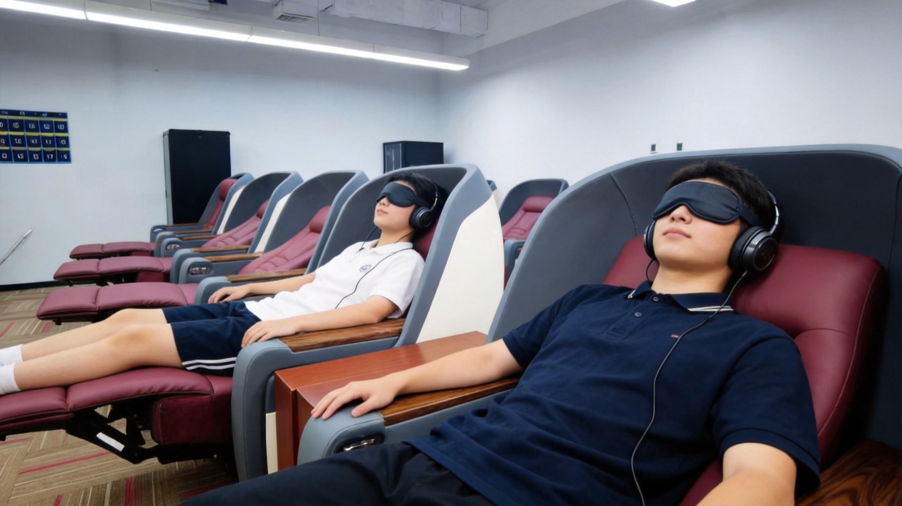

Words fade quickly
Repeated copying often stays at short-term familiarity without a stable review loop.
AI Brainwave English is not positioned as a magic shortcut. It is a structured training workflow: assessment, preparation, learning-cabin input, exit testing, review and follow-up practice.


For families and partners, the first step is not a big promise. It is a short assessment-led experience that shows whether the learner can recognize, recall and review target words after the session.
Vocabulary problems can come from phonics, weak pronunciation, unstable memory, slow reading response, writing output or poor review rhythm.
Repeated copying often stays at short-term familiarity without a stable review loop.
Vocabulary gaps can slow reading, listening, writing and exam-paper review.
Families and centers need visible testing, records and next-step guidance.
The value of the model is not only the cabin. It is the complete operating process around the cabin.
Check phonics, vocabulary, grammar, reading, writing and exam gaps.
Read and prepare target words before entering the learning-cabin session.
Use a calmer environment and guided vocabulary tasks to reduce resistance.
Check recognition, pronunciation, recall and error records immediately.
Use next-day review and follow-up practice to connect words to real use.
The same measurable workflow can serve parents, education-center partners and overseas cooperation discussions.
Start with a free assessment and decide whether a short trial is appropriate.
Book assessment →Use a small pilot to validate assessment, trial, exit testing and parent conversion.
Partnership model →Explore ESL, test-prep, overseas Chinese-family and future Chinese-learning scenarios.
Read insights →For centers and investors, the first question is not how big the rollout can be. The first question is whether the assessment, trial, exit test, review and parent communication can be repeated.
AI Brainwave English should be introduced overseas as a measurable vocabulary-training and learning-center pilot model, not as a medical, neurological or mystical claim.
The English knowledge base explains vocabulary retention, learning-cabin workflow, safety boundaries, education-center pilots and global cooperation.
A practical explanation of the assessment-first learning-cabin model.
Read article →How centers can test fit before committing to scale.
Read article →